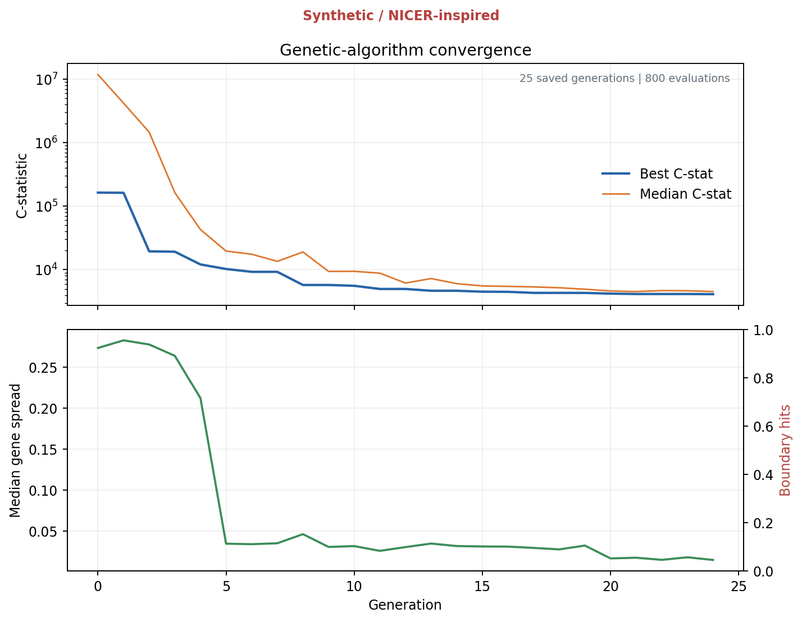
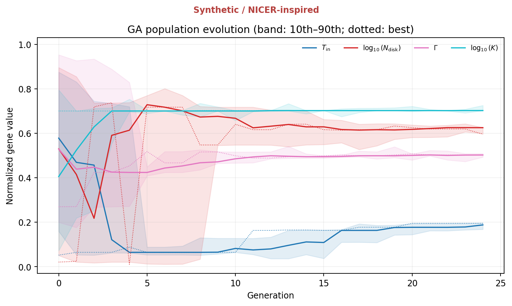

Computational astrophysics / Project blog
EvoXRB: Genetic Algorithms, and a Very Real Black Hole
Building a Python, NICER-inspired X-ray experiment around MAXI J1820+070, then finding out whether natural selection is actually any good at fitting spectra.
Introduction
There are many ways to learn a genetic algorithm. You can optimise a mathematical function, evolve a string of zeroes into ones, make little virtual creatures walk badly across a screen for six hours, or do one of the other examples that have been repeated since computers became powerful enough to imitate biology without needing any of the inconvenient biological parts.
I wanted something slightly more difficult.
The original idea for EvoXRB came from asking what would happen if I took the basic philosophy of natural selection and dropped it into X-ray astronomy. Instead of an organism having genes controlling its height, colour or likelihood of being eaten by something larger than itself, one individual would have genes controlling the physical parameters of an accreting black-hole model. The ones that reproduced an observed X-ray spectrum well would survive. The ones that produced complete nonsense would be politely removed from the gene pool.
That was the basic idea.
The project then became significantly more complicated because telescopes, statistics and black holes all refused to behave like a four-variable optimisation exercise.
As expected.
The object I based the experiment around is MAXI J1820+070, a real black-hole X-ray binary that underwent an extremely bright outburst in 2018. NICER, alongside instruments including Swift, NuSTAR and Insight-HXMT, followed substantial portions of its evolution. Published work shows changes in its X-ray spectrum, hardness, variability and quasi-periodic oscillations as the system moved through different accretion states.
That makes it a very nice object for the sort of project I wanted to make.
There is, however, one important distinction to get out of the way before anything else.
1. So what actually is a genetic algorithm?
The biological world has genotype and phenotype.
The genotype is the underlying information. DNA is not the organism itself, but it encodes many of the instructions that eventually help produce it. The phenotype is what comes out of that interaction: height, colour, shape and whatever other traits nature has decided are worth arguing about.
A genetic algorithm steals this idea and removes almost everything that makes biology interesting.
For EvoXRB, the genotype can be represented as four numbers:
where every gene lies between 0 and 1.
Those numbers are decoded into physical model parameters:
Here:
- Tin controls the characteristic temperature of the inner disk-like component.
- Ndisk controls its normalization.
- Γ is the photon index of the high-energy continuum.
- K controls that continuum’s normalization.
The normalizations cover enormous ranges, so EvoXRB represents them logarithmically. Adding 0.1 to something like Ndisk = 2 and adding 0.1 to Ndisk = 20,000 are clearly not comparable mutations unless you have declared war on numerical conditioning.
So the baseline chromosome is effectively
Each chromosome therefore describes one possible X-ray source.
Generate a population of these chromosomes, calculate how well every source reproduces the data, preferentially reproduce the better ones, introduce mutations and repeat.
That is natural selection after being put through several layers of NumPy.
The full EvoXRB configuration uses a population of 192 individuals, tournament selection with groups of three, a 0.9 crossover probability, simulated-binary crossover, bounded polynomial mutation, 3% elitism and the possibility of injecting 5% random immigrants when the population becomes stagnant and loses diversity.

Mutation also changes character throughout the run. It begins comparatively exploratory and gradually becomes more conservative as the search progresses.
This is quite important.
If mutations stay enormous forever, the population spends its entire existence enthusiastically jumping out of useful solutions. If they become tiny too early, the algorithm can settle into a bad region and collectively decide that mediocrity is evolutionarily optimal.
Human institutions have reproduced the second problem with remarkable efficiency.
The GA therefore monitors both improvement in the best statistic and the spread of the population. Convergence is only accepted once the population has survived a minimum number of generations, the best score has stopped improving sufficiently, and the genes themselves have collapsed into a sufficiently narrow region.
EvoXRB saves more than the winning individual because the losing population is scientifically useful too.
If the best score stops moving but half the population is sitting in one region while the other half is sitting somewhere completely different, that is rather important information. It could indicate multiple minima, degeneracy, insufficient convergence or a bug waiting in the darkness.
So the population itself is tracked through time.

This is one of the reasons I find genetic algorithms more interesting than simply calling an optimiser and receiving four numbers back.
You can watch the search happen.
2. A telescope does not measure the theoretical spectrum
Suppose the black-hole system emits a photon spectrum S(E).
It would be extremely convenient if the telescope simply returned S(E).
It does not.
An X-ray detector records counts in detector channels. Between the astrophysical source and the array sitting on the International Space Station there are optics, energy-dependent collecting areas, finite energy resolution, background events and the general tendency of experimental equipment to make a theoretical physicist regret leaving the whiteboard.
The expected detector counts are much closer to
Here:
- S(E | θ) is the physical photon model.
- A(E) is the telescope’s effective area.
- Ri(E) gives the probability that a photon of true energy E is recorded in detector channel i.
- Bi is the background.
- texp is the exposure.
So even in a synthetic project I cannot simply generate a pretty theoretical curve, add some Gaussian noise and declare myself an observational astronomer.
The model has to pass through an instrument first.
The real NICER analysis ecosystem represents these effects using products such as ARF and RMF files. An ARF describes the energy-dependent effective collecting area. An RMF describes redistribution: a photon does not necessarily appear in exactly the detector-energy channel corresponding to its true energy.
The synthetic version of EvoXRB creates equivalents of both ideas directly in Python.
It uses 600 true-energy bins between 0.1 and 12 keV and 236 detector channels between 0.2 and 12 keV. The fitting region is restricted to 0.5–10 keV.
The effective-area curve is generated from fixed NICER-inspired anchor points and interpolated smoothly between them. It climbs from almost nothing at low energy to a broad maximum around the soft X-ray band and then decreases towards higher energies.
The redistribution matrix is Gaussian. Its approximate energy resolution is set using
Every true-energy column of the matrix is normalized so that the redistribution probabilities sum to one.

This figure is probably the point where EvoXRB stops being a generic optimisation project.
The GA never sees a smooth theoretical function and asks how close it is to another smooth theoretical function.
It changes the astrophysical parameters, produces a photon spectrum, sends that spectrum through the response matrix, adds the expected background and only then asks whether the detector counts make sense.
That response-folding step is the little piece of observational astronomy sitting underneath everything else.
3. Building the black hole, approximately
The original project plan used the familiar XSPEC expression
TBabs*(diskbb+powerlaw)That is a useful baseline model for learning because it separates the spectrum into three understandable pieces:
- absorption between us and the source,
- thermal emission associated with the accretion disk,
- a harder continuum associated with energetic processes around the compact object.
The current EvoXRB code deliberately does not implement TBabs, diskbb or any calibrated Comptonization model exactly.
Instead it uses transparent educational approximations.
The absorption is
the disk-like component is
and the power law is
The primary photon model is therefore
A second model replaces the pure power law with a cutoff surrogate,
That second model exists for a very useful reason which becomes important later.
It allows me to deliberately generate data with one model and fit it using the wrong one.
Because an optimiser being extremely confident does not mean the model it is optimising is physically correct.
This turns out to be one of the more important results in the whole project.
4. Making a fake outburst
A single synthetic spectrum would prove that the code can fit one synthetic spectrum.
Interesting, but not exactly an outburst.
So EvoXRB defines 12 synthetic epochs running from a hard rise, through hard and intermediate phases, into a soft state and then back towards the hard state.
The reference dates and state names are based on the published evolution of MAXI J1820+070, particularly the spectral and timing behaviour described by Li et al., Stiele & Kong and other observational studies.
The actual parameter values are injected by the configuration file.
They are not fitted measurements from those papers.
| Epoch | Phase | Tin (keV) | Ndisk | Γ | K | Injected QPO |
|---|---|---|---|---|---|---|
| E01 | hard rise | 0.20 | 15000 | 1.55 | 0.35 | 0.05 Hz |
| E02 | hard plateau | 0.24 | 14000 | 1.60 | 0.45 | 0.10 Hz |
| E03 | hard plateau | 0.28 | 13000 | 1.65 | 0.50 | 0.20 Hz |
| E04 | hard plateau | 0.32 | 12000 | 1.70 | 0.48 | 0.40 Hz |
| E05 | hard decline | 0.38 | 11000 | 1.68 | 0.40 | 0.80 Hz |
| E06 | hard decline | 0.45 | 10000 | 1.75 | 0.34 | 1.50 Hz |
| E07 | intermediate | 0.55 | 9000 | 1.95 | 0.32 | 3.00 Hz |
| E08 | intermediate | 0.65 | 8000 | 2.15 | 0.27 | 5.00 Hz |
| E09 | intermediate | 0.75 | 7000 | 2.35 | 0.20 | 8.00 Hz |
| E10 | soft | 0.70 | 7500 | 2.40 | 0.06 | none |
| E11 | decay intermediate | 0.45 | 9000 | 2.00 | 0.12 | 0.50 Hz |
| E12 | return hard | 0.30 | 11000 | 1.70 | 0.20 | 0.20 Hz |
The general behaviour is deliberate.
The disk becomes hotter towards the intermediate and soft phases. The high-energy continuum softens as Γ increases. The continuum normalization collapses into the soft state. The injected variability decreases, and the type-C-like QPO moves towards higher frequencies before disappearing in the synthetic soft epoch.
It is a caricature of an X-ray binary outburst rather than a reconstruction of one.
That is completely acceptable here because the point of the first experiment is to know the answer.
If I inject
into E08, then I can ask whether the fitting machinery recovers them.
There is no philosophical debate about what the true parameters were.
They are in the YAML file.
5. Turning photons into fake observations
For every epoch, EvoXRB evaluates the photon model across the true-energy grid and folds it through the synthetic response.
The resulting expected detector spectrum is
Then, rather than fitting those exact expectations, the program draws the observed counts from a Poisson distribution:
This matters.
Photons arrive as discrete events. If an energy channel is expected to contain 17.4 photons, the detector is not going to hand over 17.4 photons because one photon forgot to finish entering the telescope.
The observed spectrum is a noisy realization of the underlying expectation.
This also means that least-squares statistics are not automatically the best choice.
Which brings us to C-stat.

6. Why I stopped using χ² as the main answer
My early design for EvoXRB started with
It is familiar, easy to understand and for sufficiently high counts it can be useful.
But X-ray spectra are fundamentally photon-counting data.
The better baseline is therefore the Poisson likelihood and its associated Cash statistic.
EvoXRB uses the Poisson deviance form
with the di = 0 limit handled analytically.
Lower C is better.
So the genetic algorithm’s entire existence can be condensed into something almost insultingly simple:
Everything else, selection, crossover, mutation, immigrants and 300 generations of simulated Darwinism, exists to find that minimum without being trapped by the landscape on the way there.
Cash originally developed this likelihood-based approach specifically with photon-counting problems in astronomy in mind, so using it here is not merely because C-stat looks sufficiently astrophysical in a plot title.
7. The genetic algorithm needs an opponent
There would be little point building an elaborate optimisation system and then announcing it works because it found a number.
It needs a control.
EvoXRB therefore compares the genetic algorithm against deterministic bounded optimisation using SciPy.
The control does not use one starting position either. It creates a Latin-hypercube set of starting points across the normalized parameter space and runs L-BFGS-B from each one.
The full profile uses 20 SciPy starts.
This gives three distinct things to compare:
That last one is particularly interesting.
The GA acts as the explorer. It tries to locate a promising basin globally.
SciPy then acts as the person who arrives afterwards with a ruler and complains that everybody else has been imprecise.
If this hybrid consistently reaches good solutions using fewer or more robust starting assumptions, then the GA has potentially earned its computational cost.
If multi-start SciPy reaches the same place faster every time, then that is also an answer.
I did not want to design the experiment so that the genetic algorithm was guaranteed to win. That would be a very strange form of scientific inquiry.
8. And then the smoke test humbled the genetic algorithm
The results currently committed to the repository come from the smoke profile.
This is important.
The smoke profile is not the full scientific campaign. It exists so that the entire pipeline can run quickly during development and continuous integration.
Instead of 192 individuals and 300 generations, the smoke GA uses:
- 32 individuals,
- at most 24 generations,
- one random seed,
- four SciPy starting points,
- heavily shortened posterior sampling,
- two recovery realizations at the low-count exposure.
The entire checked-in case study ran in about 2.8 seconds.
It generated all 12 synthetic epochs, 21 optimisation rows, 60 recovery rows, a posterior result and three timing analyses, then passed the repository’s artifact-validation checks.
That is useful for integration testing.
It is not the dataset from which I intend to make grand declarations about the superiority of evolutionary computation.
And the raw results make that extremely obvious.
For the three representative epochs fitted with the primary power-law model:
| Epoch | Raw GA ΔC | GA + SciPy ΔC | Multi-start SciPy |
|---|---|---|---|
| E01 | 490.61 | 467.05 | 0 |
| E08 | 3944.3 | ≈0 | 0 |
| E10 | 724.88 | ≈0 | 0 |

So no, the raw smoke-profile genetic algorithm did not emerge from the digital wilderness carrying the perfect answer in its mouth.
For E08 and E10, the GA placed the local optimiser in a basin from which SciPy recovered essentially the same minimum as the multi-start control.
For E01, even the polished GA solution remained substantially worse.
E01 is the awkward child in this experiment, which is useful because it prevents me from writing a paragraph about how flawlessly everything worked and then pretending science happened.
The important result is therefore not:
“Genetic algorithms beat normal optimisers.”
The current result is:
“The complete optimisation pipeline works, the hybrid approach can recover the control solution in some smoke-test cases, and the raw reduced-budget GA is not reliable enough to stand on its own.”
That is a much more useful answer.
The full configuration exists specifically to test whether increasing the population to 192, running five independent seeds and allowing up to 300 generations changes this picture.
There is also an opt-in high-signal acceptance test using a 100 ks synthetic spectrum. The test requires at least four of five GA seeds, after local polishing, to finish within
of the 20-start SciPy control. The best solution must additionally recover Tin and Γ to within 5%, and Ndisk and K to within 10%.
That is the standard the full GA is supposed to satisfy.
The smoke run is merely the little creature poked with a stick before the actual experiment is allowed outside.
9. Can the model recover parameters when I know the truth?
The recovery campaign is arguably more important than fitting the twelve illustrative epochs.
The experiment generates spectra from known parameters, changes the exposure and repeats the optimisation across independent Poisson realizations.
This lets me calculate proper recovery metrics such as
and
If increasing the number of photons causes the recovered values to tighten around the injected truth, that is exactly what I would hope to see.
Again, the smoke run gives an interesting warning.
For the 512-second correct-model recovery experiment, the raw GA rows have a failure rate of 1 in the reduced campaign. The GA+SciPy and multi-start SciPy rows have a failure rate of 0.

At high signal in the smoke profile, the same pattern appears: the raw GA remains far from the best statistic, while both locally polished and multi-start solutions recover parameters extremely closely.
For example, one high-signal injected spectrum used
After polishing the GA solution, the errors were approximately
That is good recovery.
It is also recovery produced by the hybrid, not the raw smoke GA.
The distinction matters.
10. The experiment where the optimiser is allowed to be perfectly wrong
This is my favourite test in the repository.
EvoXRB can generate a spectrum using the cutoff continuum
and then deliberately fit it using the ordinary power law
The optimiser is doing nothing wrong.
It is being asked:
“Within this model, what parameters produce the best possible fit?”
It answers that question.
The problem is that the model is wrong.
In the 512-second smoke recovery results, the locally polished wrong-model fits still settle into the same optimum as the multi-start SciPy control, but the physical parameters remain biased. The approximate mean biases include
The optimiser can therefore become more successful numerically while remaining wrong physically.
This is an important lesson because optimisation plots are extremely seductive.
A smooth convergence curve feels authoritative.
A tiny gradient feels authoritative.
A six-decimal-place parameter feels extremely authoritative.
None of those things prove that the underlying physical model describes nature.
A genetic algorithm can optimise the wrong physics with extraordinary enthusiasm.
It has no existential crisis halfway through generation 214 where it suddenly asks whether the model is conceptually justified.
That is still our job.
11. A best-fitting number is not an uncertainty
Suppose the optimisation stage finds θ̂.
That is a point.
It does not tell me automatically how uncertain each parameter is, whether two parameters are strongly correlated, whether the posterior is asymmetric, whether another solution is almost equally plausible, or whether the optimum is resting against one of my artificial search bounds.
So EvoXRB separates optimisation from inference.
The GA searches globally.
The posterior sampler then asks what range of parameter combinations remains statistically plausible:
The main sampler is emcee, an affine-invariant ensemble MCMC implementation used widely in astrophysics.
The GA solution provides the initial region, but several diffuse walkers are deliberately spread farther away so that the ensemble does not blindly assume the GA has already revealed the one true basin.
The code checks chain length, autocorrelation stability, acceptance fraction and how much posterior mass is accumulating near the boundaries.
If the ensemble fails to converge, if too much probability mass sits against the prior edges, or if independent GA runs reveal competitive separated modes, the pipeline can fall back to dynesty nested sampling.
That division of labour is intentional:
The GA population itself is not treated as a posterior.
Natural selection is many things.
Bayesian inference is not one of them.
For E08 the injected values are
The committed smoke-profile posterior gives:
| Parameter | Posterior median | 16th percentile | 84th percentile |
|---|---|---|---|
| Tin | 0.6519 | 0.6460 | 0.6618 |
| Ndisk | 8035.8 | 7668.6 | 8376.9 |
| Γ | 2.1444 | 2.1272 | 2.1575 |
| K | 0.2681 | 0.2595 | 0.2731 |
The injected truth sits where I would want it to sit.
This still does not make the synthetic model a measurement of MAXI J1820+070.
It demonstrates that the inference stage behaves sensibly when the model that generated the universe is also the model used to fit it.
A luxury rarely provided by the actual universe.

12. Spectra are only half of what makes this source interesting
MAXI J1820+070 is particularly useful because its real outburst was not only spectrally interesting.
Its timing changed dramatically.
Black-hole X-ray binaries show broadband variability and quasi-periodic oscillations, usually shortened to QPOs because physicists eventually get tired of saying the full names of things they study thousands of times.
A QPO appears as a broad peak in the power spectrum of a light curve.
A useful description is a Lorentzian centred on frequency ν0, with width FWHM and quality factor
Higher Q corresponds to a comparatively narrow, coherent feature.
The current EvoXRB timing module again stays completely synthetic.
It uses a Timmer-Koenig-style Fourier method to create stochastic broadband variability. A Lorentzian QPO can then be added in Fourier space. The resulting Gaussian variability is mapped into a positive count rate before Poisson photons are drawn.
The default full timing experiment uses:
- 1/512-second sampling,
- 512-second segments,
- four segments,
- soft and hard energy-inspired bands,
- averaged periodograms,
- Lorentzian fitting,
- 200 bootstrap realizations.
The soft band is based on 0.5–2 keV and the hard band on 2–10 keV.
A QPO is accepted as type-C-like only when
and the fitted QPO amplitude reaches at least a three-sigma-like amplitude/error threshold.
I use “type-C-like” rather than simply “type-C QPO” because this is not a real observational classification.
The code knows what I injected into it.
It is performing a detection exercise, not discovering a new timing feature in an astronomical source.
13. Three timing cases: detect one, reject one, find nothing in one
The smoke pipeline currently evaluates three representative timing epochs.
E01 contains an injected QPO at 0.05 Hz.
The fitted feature lands around 0.0224 Hz with a formal amplitude significance of roughly 3.12, but its quality factor is only Q ≈ 0.61.
It therefore fails the Q ≥ 2 requirement and is not accepted.
E08 contains an injected QPO at 5.00 Hz.
The pipeline recovers
with Q ≈ 8.27 and an amplitude significance of about 23.6.
That one is accepted as type-C-like.
E10 is the soft-state example.
No QPO is injected.
No QPO is accepted.
There is something deeply satisfying about a detection algorithm occasionally saying “there is nothing here” rather than being so eager to justify its existence that it invents something.
14. Following the synthetic outburst
The twelve synthetic spectral epochs can be summarized using a hardness-intensity diagram.
Define
Intensity is the combined count rate.
The hard synthetic epochs begin with larger hardness values, the track softens towards E09/E10, then hardens again during the return phase.

The real MAXI J1820+070 has a much richer hardness-intensity evolution than this educational track. Li et al. report a q-like HID with unusual hard-state behaviour, while other multi-mission work discusses changing disk, Compton and reflection components throughout the 2018 outburst.
EvoXRB is not attempting to reproduce every one of those structures yet.
The purpose of this diagram is to create an astrophysically recognizable evolutionary sequence on top of which the computational tools can be tested.
Once the spectrum and timing information are placed together, the project can start asking the question I originally found interesting:
Can the computationally inferred spectral parameters be connected to changes in the variability?

One relationship worth eventually studying is
Published analyses of the real source have reported a positive connection between type-C QPO frequency and photon index, linking the changing timing behaviour to the Comptonizing region.
The repository therefore includes a figure designed for the same type of comparison.

That last sentence matters enormously.
A scatter plot containing one accepted QPO point is not evidence for a correlation.
It is evidence that the plotting function runs.
The full campaign needs far more accepted epochs before this plot becomes scientifically interesting.
15. Reproducibility, because random numbers are not an excuse
A genetic algorithm is stochastic.
Poisson observations are stochastic.
MCMC is stochastic.
Synthetic light curves are stochastic.
If every result changed unpredictably every time I ran the program, debugging the project would become an archaeological expedition.
So EvoXRB starts from a fixed master seed:
1820070and derives child seeds for the separate simulation and optimisation stages.
The configuration is also hashed. The currently committed smoke result corresponds to
d17357d31d720259so generated results can be associated with the configuration that created them.
The case-study output stores provenance including:
- profile,
- seed,
- configuration hash,
- package versions,
- generated tables,
- generated figures,
- completion status.
The repository’s Windows GitHub Actions workflow runs the test suite automatically. The ordinary CI job runs the fast validation suite, while the computationally expensive full acceptance campaign is deliberately opt-in and can upload its result tables, figures and reports as workflow artifacts.
This is not the glamorous astrophysics part.
It is also what stops me from staring at a good result six months later and wondering which of twelve slightly different scripts produced it.
16. So, did the genetic algorithm work?
This is annoyingly dependent on what “worked” means.
Did I implement a real-valued genetic algorithm with tournament selection, simulated-binary crossover, polynomial mutation, elitism, diversity monitoring, immigrant injection, convergence rules and checkpointing?
Yes.
Can it be connected to a response-folded Poisson X-ray fitting problem?
Yes.
Does the whole pipeline simulate an artificial X-ray binary outburst, optimise spectra, perform recovery experiments, run posterior inference, simulate timing behaviour and produce reproducible outputs?
Yes.
Does the currently committed raw smoke-profile GA reliably outperform multi-start SciPy?
Absolutely not.
In fact, several of the smoke results make SciPy look rather smug.
Does the GA + local optimisation strategy show promise?
Yes. In E08 and E10 it reaches essentially the same minima as the multi-start control, and its high-signal recovery after polishing is extremely good.
But E01 also demonstrates that a bad GA basin can remain bad after local polishing.
So the current repository has not earned the conclusion:
“Genetic algorithms are better for X-ray spectral fitting.”
What it has earned is the much more interesting question:
Under what likelihood structures, parameter dimensions and degeneracies does global evolutionary search become useful enough to justify its cost?
A simple four-parameter model may simply not need it.
Once the model grows into
with calibration uncertainty, background uncertainty, cross-instrument constants and strongly correlated physical parameters, the optimisation landscape becomes substantially nastier.
That is where the GA should be tested properly.
Not because evolution is fashionable.
Because complicated multimodal search spaces are the problem it is supposed to solve.
17. The eventual route back to real astronomy
The funny thing is that the current synthetic project has brought me back to the original real-data design in a better position.
The future path is now quite obvious.
The synthetic SpectrumModel would be replaced by real XSPEC models.
The educational effective-area and redistribution arrays would be replaced by real ARF and RMF products.
Synthetic spectra would be replaced by reduced NICER observations.
The objective would still have almost the same conceptual form:
statistic = objective(parameters)but the implementation underneath would ask XSPEC to evaluate something such as
TBabs*(diskbb+powerlaw)or eventually
TBabs*(diskbb+nthcomp)and more physical reflection models.
The real workflow would look approximately like:
The old mock design was therefore not wasted.
It became the specification for what this project can grow into.
The synthetic repository is effectively the controlled laboratory experiment before I let the algorithm near a real telescope archive.
There are several obvious next stages.
- Run the complete five-seed, 192-member, 300-generation acceptance campaign and preserve those results rather than relying on smoke artifacts.
- Expand the synthetic model into more difficult parameter spaces and test whether the GA starts providing measurable robustness over multi-start local methods.
- Strengthen the timing campaign so the νQPO − Γ plot contains an actual sample rather than one heroic E08 point doing all the work.
- Integrate a real HEASoft/XSPEC backend and run the exact same conceptual optimisation experiment on selected NICER spectra.
- Once the NICER pipeline is stable, combine it with NuSTAR or another instrument to increase the energy range and make more physical Comptonization and reflection models worthwhile.
At that stage the original question becomes real:
Can an evolutionary global search recover a robust description of an accreting black hole from actual X-ray observations, and when does it do something established optimisers cannot already do more cheaply?
I do not know the answer yet.
That is precisely why the project is worth continuing.
18. What I actually learned from building this
I originally started with genetic algorithms because they looked interesting.
The project ended up forcing me to learn far more than the algorithm.
I had to think about what an X-ray telescope physically records rather than treating a spectrum as a convenient x, y dataset.
I had to understand why a detector response has to sit between a photon model and observed counts.
I had to move from χ² towards Poisson statistics.
I had to separate global optimisation from posterior inference.
I had to think about parameter degeneracy, model misspecification and why a numerically excellent optimum can still describe the wrong physics.
I had to deal with reproducibility, random seeds, checkpointing, configuration hashes and automated tests.
I also learned that a genetic algorithm becoming stuck is not necessarily a disappointing result.
Sometimes the algorithm failing is the result.
If a 32-member smoke population cannot reliably locate the same minima as four SciPy starts, then the answer is not to hide the comparison. It tells me what experiment needs to come next.
And if the full 192-member, five-seed campaign still cannot justify itself against a conventional optimiser, then that is also worth reporting.
There is little value in building an optimisation method whose conclusion was decided before the first generation existed.
For now, EvoXRB sits somewhere between computational astrophysics, observational methodology and an overly elaborate attempt to teach digital organisms about X-rays.
Which is more or less exactly where I wanted it.
19. References and further reading
- Li, Y., Yan, Z., Gao, C. & Yu, W. X-ray spectral and timing evolution during the 2018 outburst of MAXI J1820+070 (2024). arXiv:2407.08421.
- Stiele, H. & Kong, A. K. H. A timing study of MAXI J1820+070 based on Swift/XRT and NICER monitoring in 2018/19 (2019). arXiv:1912.07625.
- Prabhakar, G., Mandal, S., Athulya, M. P. & Nandi, A. Accretion Scenario of MAXI J1820+070 during 2018 Outbursts with Multi-mission Observations (2022). arXiv:2204.13363.
- Atri, P. et al. A radio parallax to the black hole X-ray binary MAXI J1820+070 (2020). arXiv:1912.04525.
- NASA HEASARC. NICER analysis documentation and software threads. HEASARC NICER documentation.
- NASA HEASARC. XSPEC User’s Guide. XSPEC manual.
- NASA HEASARC. NICER nicerl2 standard processing pipeline. nicerl2 analysis thread.
- NASA HEASARC. NICER nicerl3-spect spectral-product pipeline. nicerl3-spect analysis thread.
- Cash, W. Parameter estimation in astronomy through application of the likelihood ratio, Astrophysical Journal 228, 939 (1979). NASA NTRS record.
- Deb, K. & Agrawal, R. B. Simulated Binary Crossover for Continuous Search Space, Complex Systems 9, 115–148 (1995). Paper PDF.
- Foreman-Mackey, D., Hogg, D. W., Lang, D. & Goodman, J. emcee: The MCMC Hammer, PASP 125, 306 (2013). arXiv:1202.3665.
- Timmer, J. & König, M. On generating power law noise, Astronomy & Astrophysics 300, 707 (1995). NASA ADS abstract.
- DEAP documentation. Evolutionary computation operators and tools. DEAP tools API.
- emcee documentation. Ensemble MCMC sampling in Python. emcee docs.
- dynesty documentation. Dynamic and static nested sampling. dynesty docs.